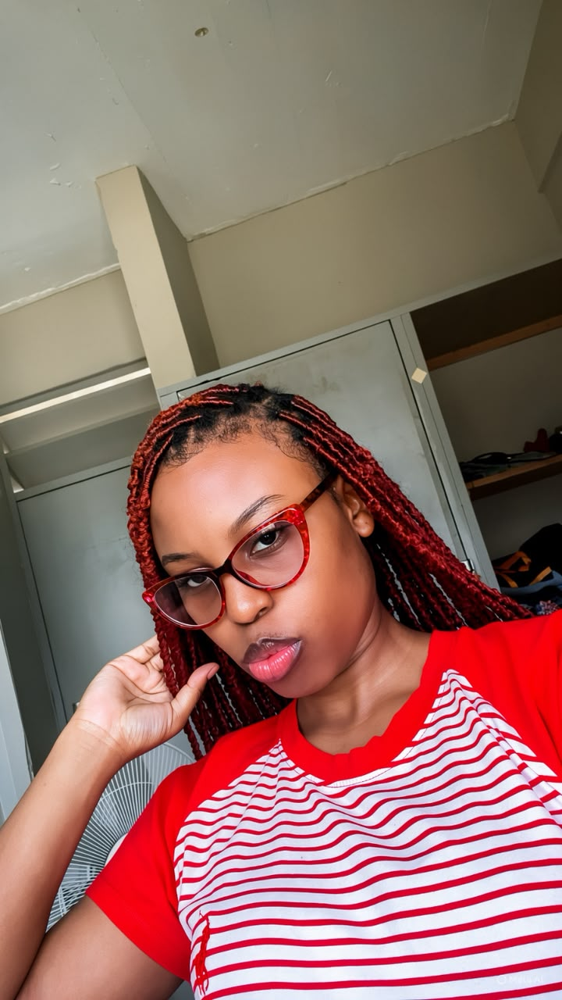
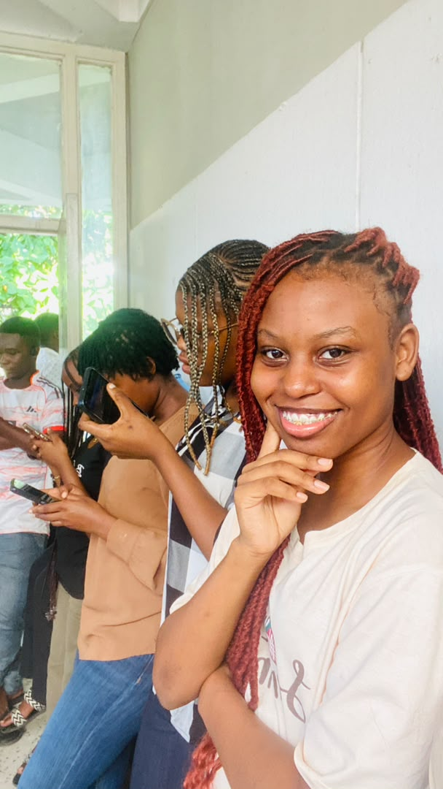

Biography
I was born in 2005 in Karatu, Arusha Region, Tanzania a curious kid who always wanted to know how things worked. I grew up with my parents and grandparents, building a love for reading, learning, and pushing boundaries. Today I am pursuing Computer Science at UDSM, turning that same curiosity into code and real world solutions.
Skills
Click any skill to learn more ↓
- Programming
- Problem Solving
- Team Collaboration
- Clear Communication
- Leadership
- Creative Thinking
Education
| Level | School | Year |
|---|---|---|
| Primary | Tuishime Primary School | 2018 |
| O-Level | Michael Secondary School | 2022 |
| A-Level | Msalato Secondary School | 2025 |
| University | University of Dar es Salaam | 2025 |
Hobbies
Travelling
Exploring new places and cultures helps me learn from different perspectives and recharge creatively. Every trip even within Tanzania teaches me something about people, food, language, and the beautiful diversity of the world around us. I hope to visit all of East Africa one day.
Listening to Music
Music helps me relax, stay focused, and find inspiration during study and project work. I love Afrobeats, Bongo Flava, and R&B genres that blend rhythm, storytelling, and emotion beautifully. Sometimes a good song is the best study partner I have.
Watching Movies
Movies are an engaging way to relax while discovering new ideas and storytelling techniques. I especially enjoy tech thrillers and inspiring biopics about people who changed the world. Good cinema fires up my imagination and reminds me of the power of a welltold story.
Gallery
Click any photo to view it full size ↓


Contact
we can communicate by using the email:
solanusnancy62@gmail.com